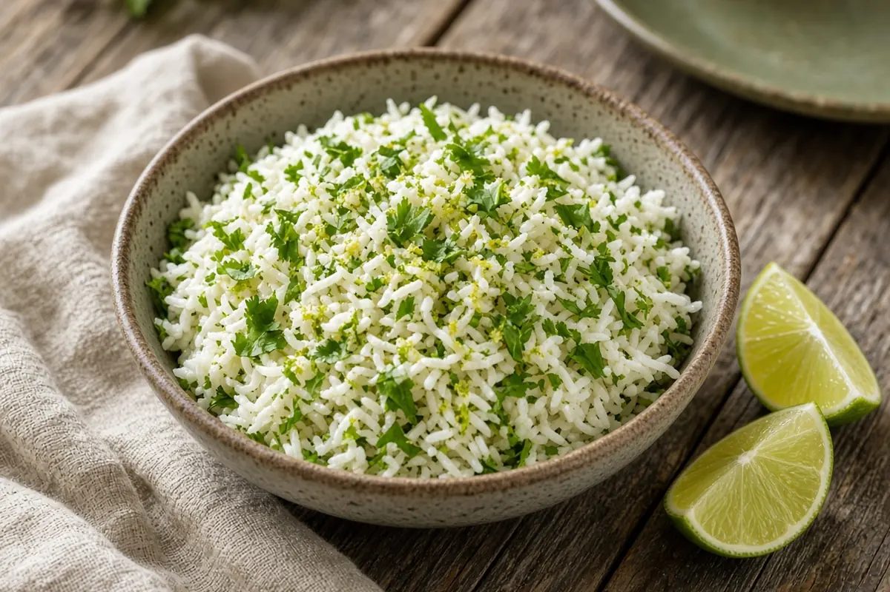

Cilantro Lime Rice
Toasted basmati rice cooked with garlic and lime zest, then tossed with fresh lime juice and lots of cilantro.

Adapted from Simply Recipes
6 servings
By
Yield: 6 servings
Prep:
Cook:
Total:
Difficulty: Easy
Ingredients
- 2 Tbsp extra virgin olive oil
- 1 1/2 cups basmati or long grain white rice
- 1 clove garlic, minced
- 2 1/4 cups water
- 1 tsp salt
- Zest of 1 lime
- 3 Tbsp lime juice
- 1 cup lightly packed chopped cilantro, leaves and tender stems
Instructions
- Heat the olive oil in a medium saucepan over medium-high heat. Add the rice and stir to coat, then cook, stirring now and then, until it starts to brown, about 5 minutes.
- Add the garlic and cook 1 minute more.
- Add the water, salt, and lime zest and bring to a rolling boil. Cover, turn the heat to low, and cook undisturbed 15 minutes.
- Take the pan off the heat and let it sit, covered, 10 minutes. Fluff with a fork.
- Toss with the lime juice and cilantro and serve.
Notes: Check your rice package; some long-grain rices need a few more minutes. Great with fajitas, tacos, and grilled shrimp.